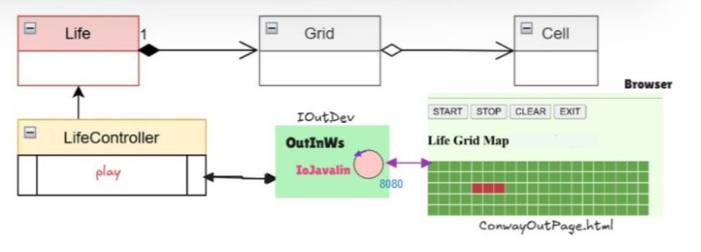

Introduction
Realizzazione di un valutatore di espressioni matematiche.
Requirements
- Realizzare un sistema che preso in input x possa valutare sin(x)+cos(sqrt(3)*x) e restituisca il risultato all'utente
- Il sistema deve essere realizzato con Java e Javalin
- Il sistema deve essere implementato usando il framework Javalin
- Il deployment del sistema deve avvenire mediante Docker
Requirement analysis
- È necessaria una semplice funzione eval che prenda in input un numero reale e restituisca il risultato della valutazione di sin(x)+cos(sqrt(3)*x). Non sarebbe fondamentale realizzare un interfaccia apposita ma per il principio di SoC creeremo l'interfaccia IEvaluator.
- È necessario un server Javalin che esponga una API per ricevere in input un numero reale e restituire il risultato della valutazione di sin(x)+cos(sqrt(3)*x).
- Il server Javalin deve essere esposto su una porta accessibile dall'esterno di un container Docker.
Problem analysis

Il sistema sarà realizzato con un solo servizio per via della semplicità dei requisiti, ma sarà comunque organizzato in modo modulare, con una chiara separazione tra la logica di valutazione e la logica di esposizione del servizio. La classe SistemaSJavalin implementa l'interfaccia IEvaluator e permette all'utente di usufruirne attraverso una api REST esposta sull'endpoint GET /eval/valore, dove valore è un numero reale passato come parametro di query. Si è scelta questa soluzione rispetto a WebSocket in quanto non è necessario mantenere una connessione persistente ma piuttosto solo una chiamata HTTP che restituisca il dato richiesto. Il sistema è realizzato in modo da essere facilmente estendibile, ad esempio aggiungendo nuove funzioni matematiche o nuovi endpoint per esporre altre funzionalità.
Test plans
Project
Testing
Deployment
Il server Javalin è stato containerizzato con Docker. La sua immagine viene costruita con il comando "./gradlew distTar && docker build -t sistemasjavalin-1.0 .", e viene eseguita con il comando "docker compose -f sistemasjavalin.yaml up".Dopo aver eseguito il container, il servizio sarà accessibile all'indirizzo "http://localhost:8080/eval/valore", dove valore è un numero reale passato come parametro di query.